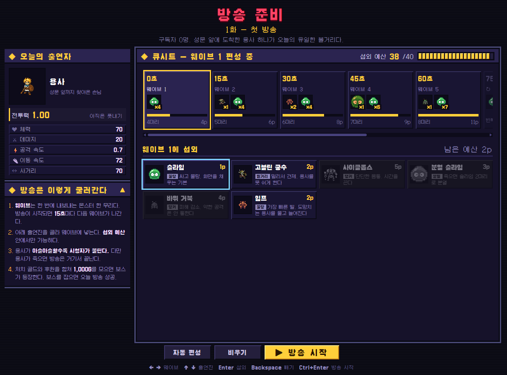
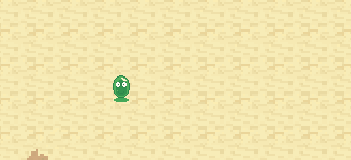
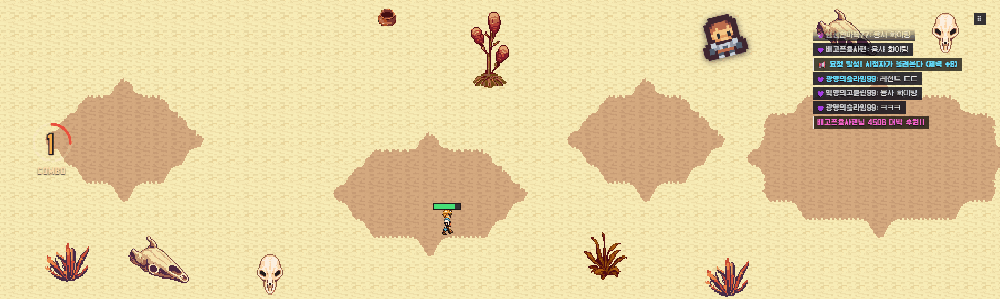

초기 기획은 마왕 시점의 운영 게임. 용사를 끊임없이 위험에 노출시키되 죽이지는 않으며 시청자를 모으고,
주 목표는 채팅방에 등장하는 안티와 저격러 처리. 그런데 전투는 용사가 알아서 하는 구조라 플레이어가 개입할 수 있는 시간이 제한되고, 그 사이 손을 놓고 지켜보는 공백기가 생긴다는 판단.
결정
방송 중 플레이어가 용사를 직접 조작해 전투에서 생존.
버린 대안
마왕 시점에서 용사를 관전하며 채팅방의 안티 · 저격러를 처리하는 방식. 긴장의 중심인 전투에 플레이어의 손이 닿지 않는 구조.
결과
방송 내내 입력이 끊기지 않고, 위험을 올릴수록 버는 돈과 죽을 확률이 동시에 커지는 딜레마를 규칙 설명 없이 체감.
이후 모든 기능의 추가 기준이 됨. 시청자 요청은 위험을 감수할 이유, 방송 사고는 몸을 사릴 때의 패배, 엔딩은 과육성 억제.
대신 기존 소환 조작과의 충돌이라는 새 문제 발생. → ADR-02
ADR-02
소환은 방송 전 “준비 방송”으로 분리한다
추가
맥락
기존에는 인게임에서 몬스터를 수동 또는 자동으로 하나씩 소환하는 구조. 용사 직접 조작(ADR-01) 이후 전투 중 소환과 이동 · 대시 컨트롤을 병행해야 해서 UX 불편 발생.
결정
역할 분리. 마왕은 방송을 꾸리는 매니저이자 최종 보스, 용사는 플레이어.
몬스터 편성은 방송 전 “준비 방송” 콘텐츠로 옮겨 웨이브를 미리 구성하고, 방송 중에는 Space 하나로 다음 웨이브를 앞당기는 것만 허용.
버린 대안
방송 중 수동 · 자동 개별 소환 유지. 전투 조작과 소환 조작이 한 손에서 경쟁하는 구조.
결과
전투 중 조작은 이동과 대시에 집중하면서도 위험도 조절 수단은 유지. 더 위험하게 가고 싶으면 Space로 다음 웨이브를 당기는 한 번의 선택.
마왕이 3화 최종 보스로 직접 등장하는 서사도 이 분리에서 출발. 방송 중 “이 몬스터 소환해 줘” 요청이 들어줄 수 없는 요청이 된 것도 이 결정의 여파. → ADR-08

준비 방송. 섭외 예산 안에서 15초 간격 웨이브 5칸에 출연진을 배치한 뒤 방송 시작.
BEFORE · 준비 방송
판 깔기
화마다 정해진 예산으로 웨이브 5칸 배치.
LIVE · 용사
버티기
공격은 자동. 고민은 설 자리, 대시 타이밍, 다음 웨이브를 당길지 여부.
AFTER · 매니저
키우기
번 돈으로 강화, 스킬, 카드 구매.
ADR-03
시청자는 “용사가 얼마나 맞았나”만 본다
변경 · 08.07
맥락
첫 위험도는 HP 손실에 “근처 몬스터 수”를 40% 섞은 형태. 플레이테스트에서 “쉬운 몹이 몰려와서 위험도가 오르는 건 별 도움이 안 돼요” 피드백.
실제로 슬라임을 화면 가득 풀면 용사는 멀쩡한데 시청자만 증가.
결정
위험도에서 몬스터 수를 빼고 HP 손실만 반영. HP가 바닥 근처에서 버티는 동안은 한 단계 위로 올려 주는 보너스 추가.
버린 대안
HP + 몬스터 수 혼합. 게임의 핵심 긴장을 건너뛰는 편법이 열리는 구조.
결과
약한 몹을 아무리 세워도 안 맞으면 시청자 변화 없음. 벼랑 끝 생존이 가장 남는 플레이가 됨. 하락은 조금씩, 상승은 크게 조정해 “가만히 있어도 계속 망하는” 느낌도 제거.
ADR-04
시청자 수는 평균으로 돌아오는 랜덤워크로
채택
맥락
시청자 수가 숫자로만 움직이면 방송처럼 보이지 않는 문제.
결정
0으로 천천히 돌아오는 랜덤워크를 증가율 위에 얹고, 흔들림 폭은 위험도 효과를 덮지 않는 선으로 제한.
버린 대안
증가율만 곱하기: 너무 매끈한 그래프. 매 프레임 난수 더하기: 잘게 떨리기만 하는 그래프.
결과
한참 오르다 갑자기 쭉 빠지는, 실제 방송에 가까운 흐름. 그러면서도 “맞으면 오른다”는 규칙은 읽히는 수준.
ADR-05
보상은 방송답게, 후원과 대박 후원으로
채택
맥락
용사를 성장시킬 재화가 필요한 상황. 방송이라는 컨셉 안에서 보상이 어디서, 왜 들어오는지 자연스럽게 설명되어야 하고,
매번 같은 보상이면 버티는 동안의 기대감이 금방 식는 문제.
결정
보상을 시청자의 “후원”으로 지급하고 금액에 랜덤 폭을 둬 더 큰 보상을 기대하게 설계.
여기에 낮은 확률의 “대박 후원”을 추가해 평범한 후원 사이에 한 번씩 크게 터지는 순간을 배치.
이유
시청자를 모을수록 후원이 늘어나는 구조라 “위험하게 버틸수록 돈이 된다”는 핵심 규칙과 보상이 한 줄로 연결.
예측 가능한 보상보다 가끔 크게 터지는 보상이 다음 후원을 기다리게 만드는 도파민 장치.
결과
일반 후원은 작은 알림으로 흐름을 끊지 않고, 대박 후원은 채팅창 강조와 리듬 게임 이벤트로 확실하게 구분.
후원 빈도와 금액의 균형은 → ADR-06

일반 후원. 전투 흐름을 끊지 않는 작은 알림.

대박 후원. 채팅창 강조와 함께 리듬 게임 이벤트로 전환.
ADR-06
후원 빈도는 로그로 누르고, 금액은 강화 가격에 묶는다
채택 · 폭만 3회 조정
맥락
후원마다 전투가 멈추고 카드 선택 창이 뜨는 구조라 후원 빈도가 곧 게임의 박자. 너무 잦으면 전투가 끊기고, 너무 드물면 성장 정체.
결정
간격은 시청자가 늘수록 짧아지되 로그로 눌러 상·하한 사이에 고정. 금액은 “후원 한 번이면 강화 하나는 고민해서 살 수 있는” 범위로 강화 가격에 연동.
버린 대안
시청자 비례 금액만 사용. 초반엔 아무것도 못 사고, 후반엔 한 번에 전부 사 버리는 문제.
결과
간격 피드백이 일주일에 세 번 뒤집혔지만(“너무 잦아요 → 더 자주 → 너무 자주”) 곡선 모양은 유지하고 폭만 한 줄씩 수정. 후원 효과음도 금액이 아닌 구매력 기준이라, 큰 소리는 언제나 정말 큰돈이라는 신호.
대박 후원(ADR-05)은 리듬 게임으로 전환해 박자에 변주 추가.
ADR-07
몸을 사려도 지는 두 번째 패배 조건
채택
맥락
사망만 패배라면 최선은 “안전하게 버티기”. 딜레마의 한쪽이 사라지는 상황.
결정
시청자가 거의 다 빠지면 경고 → 10초 카운트다운 → 방송 폐지.
결과
시청자가 모두 없어져 방송이 폐지되지 않도록 유저는 위험을 감수하도록 수정.
ADR-08
시청자 요청은 처치 · 콤보 두 종류만
축소 · 08.10
맥락
“몬스터 5마리 잡아줘” 같은 요청은 성공하면 시청자 증가, 실패하면 감소. 위험을 감수할 이유를 주는 장치.
원래는 “이 몬스터 소환해 줘”, “보스만 때려”도 존재.
결정
처치 수 · 콤보 요청만 남기고 제한시간 약 40% 단축. 보스전 중에는 요청과 소환 모두 차단.
버린 대안
소환 · 보스 요청 유지. 웨이브를 방송 전에 미리 짜는 방식(ADR-02)으로 바뀌면서 들어줄 수 없는 요청이 된 상태.
결과
“보스에 집중하고 싶다”는 피드백과도 합치. 목표 숫자는 용사가 셀수록 늘지만 성장 속도보다 완만하게.
ADR-09
시청자 규모도 화마다 함께 키운다
추가 · 08.03
맥락
화마다 목표 골드는 1,000 → 3,000 → 5,000G로 증가. 시청자 규모가 그대로면 목표만 커지고 수입은 제자리인 벽 발생.
반대로 상한이 없다면 1화에서 9만 명을 넘어서는 문제 발생.
결정
시작 시청자 하한과 시청자 상한을 목표 골드에 비례해 함께 올림. 상한은 딱 끊지 않고 가까워질수록 상승률이 줄어드는 방식.
버린 대안
고정 상한. 도달하는 순간 위험을 감수할 이유가 사라짐.
결과
화가 넘어갈수록 방송이 커지는 체감과 현실적인 숫자를 함께 확보.
리안용사 · 방송 주인공
사르가스1화 보스
베르하르트2화 보스
그림하르트3화 · 마왕
ADR-10
엔딩은 용사를 얼마나 키웠나로 가른다
채택
맥락
돈 되는 대로 전부 강화하는 것이 정답이면 육성 단계에는 고민이 없음.
결정
3화 클리어 시점의 용사 최대 HP를 목표치와 비교해 엔딩 분기. 너무 약해도, 너무 강해도 최선의 결말이 아님.
결과
육성에도 “적당히”의 고민이 생김. 과육성은 실패가 아니라 웃긴 클립 하나로 끝나는 히든 엔딩으로 보상.
너무 약함
BAD — “싱겁네요”
마왕은 이겼지만 아무도 보지 않았다.
적당함
BEST — “전설의 방송”
마왕은 쓰러졌다. 동시 접속자 신기록과 함께.
너무 강함
HIDDEN — “1분 컷”
마왕 즉사. 클립 하나만 남기고 채널은 전설이 됐다.
ADR-11
몬스터는 스탯이 아니라 역할부터
채택
맥락
HP만 다른 몬스터 열 마리면 “그냥 센 걸 넣으면 끝”인 편성.
결정
“용사를 어떻게 괴롭히나”를 먼저 정하고 스탯은 그 역할에 맞춰 부여. 몬스터마다 비용을 둬 한 화 편성량 제한.
버린 대안
스탯 차등만 있는 몬스터 목록.
결과
편성이 “무엇을 섞을까”의 조합 문제로 전환.
역할
대표 몬스터
용사에게 주는 문제
물량
슬라임 · 임프 · 좀비
포위로 도망갈 길 차단
원거리
고블린 궁수 · 저격 고블린
멈추면 피격
탱커
사이클롭스 · 바위 거북 · 정예 기사
붙잡힌 사이 다른 위협 누적
버퍼
고블린 주술사
처치 우선순위 고민 유발
자폭
폭탄 박쥐
대시 타이밍 시험
분열
분열 슬라임
잡을수록 위험 증가
임프물량
사이클롭스탱커
정예 기사탱커
고블린 주술사버퍼
03 · Iteration
플레이테스트 로그
모든 수치 변경을 날짜, 피드백, 변경 전 값과 함께 기록. 조절용 숫자는 한 파일과 데이터 테이블에만 배치해, 피드백 하나를 한 줄 수정으로 반영.
07.30
시청자 하락 폭 축소, 상승 폭 확대
노잼 구간에서 너무 자주 빠져 “계속 망하는 중”이라는 느낌만 남던 문제. → ADR-03
07.31
흡혈 · 강화 배율 하향, 사거리 상한 추가
흡혈이 너무 세요
배율을 곱하는 구조라 조금만 올려도 난이도 급락. 멀리서 다 잡으면 위험 자체가 사라져 사거리에 상한.
08.03
강화 추가 하향, 좋은 카드 확률 하향, 시청자 상한 도입
아직도 세요 / 1화에서 9만 명은 좀…
→ ADR-09
08.07
위험도에서 몬스터 수 제거, 보스전 소환 · 요청 차단
쉬운 몹이 몰려와서 위험도가 오르는 건 도움이 안 돼요
→ ADR-03, ADR-08
08.03 → 08.10
후원 간격 세 번 왕복
너무 잦아요 → 어려워요, 더 자주 주세요 → 너무 자주 와요
곡선 모양은 유지하고 폭만 조정. → ADR-06
08.10
시청자 요청 단순화, 보스 탄막 조정
보스 탄막은 “더 많이”, “더 촘촘하게” 의견에 맞춰 발사 수와 간격 조정. → ADR-08
04 · AI Workflow
제작 과정에만 쓴 AI
플레이 중 AI 추론은 없음. 채팅, 시청자 닉네임, 몬스터 움직임 모두 규칙과 난수의 조합. AI의 자리는 기획서와 코드 사이, 그리고 아트.
영역
도구
GDD ↔ 코드 동기화
Claude Code + Notion API 커스텀 스킬
이슈 → 수정 → PR
Claude Code + GitHub CLI 커스텀 스킬
캐릭터 · 몬스터 스프라이트
PixelLab.ai + Claude가 쓴 캐릭터 디스크립션
컷씬 영상
Higgsfield · GPT Image 2 · Seedance 2.0
BGM / 후원 효과음
Suno AI / ElevenLabs
가장 유용했던 도구
기획서 표와 코드 상수를 서로 맞추는 스킬. 없으면 “기획서엔 3,000G, 게임엔 2,500G” 같은 어긋남이 금방 발생.
무엇을 바꿀지는 직접 판단, 문서와 코드 반영은 에이전트가 담당.